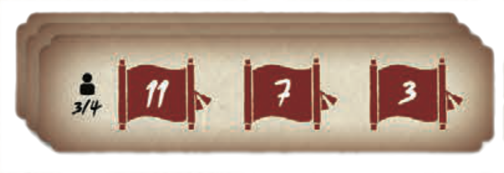
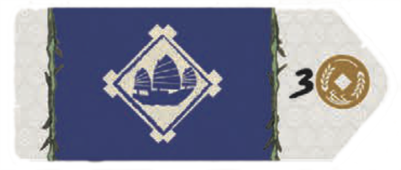
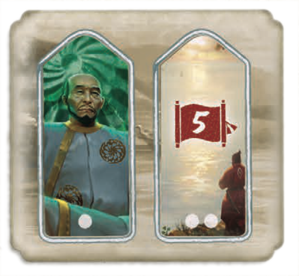
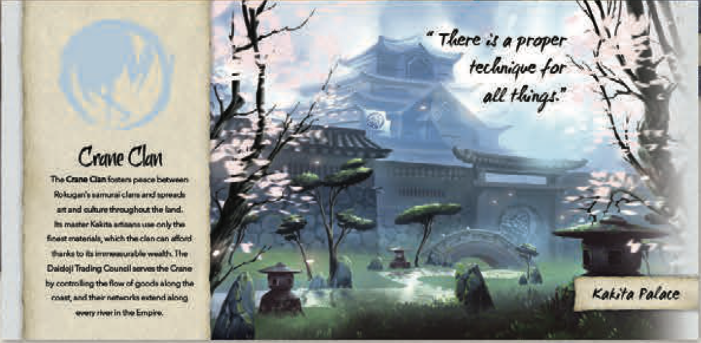
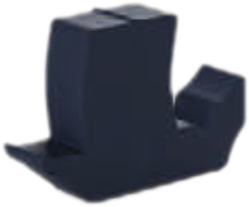
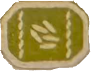
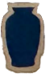
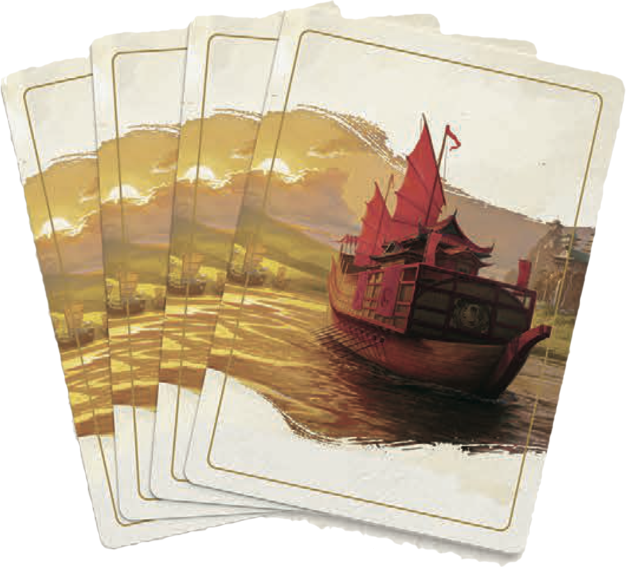

on each of the 6 Influence Tracks, correct player-count side.
on each shore space marked for the player count.
near main board. Stack Era 1 + Era 2 tiles facedown (see table). Draw top 4 Era 1 tiles to the building row.| Players | Starting Tiles | Era 1 | Era 2 |
|---|---|---|---|
| 4 | 3 Imperial Markets | 16 | 13 |
| 3 | + 3 starting | 14 | 11 |
| 2 | + 6 starting | 12 | 9 |




from supply onto clan board
(keep hidden in hand)